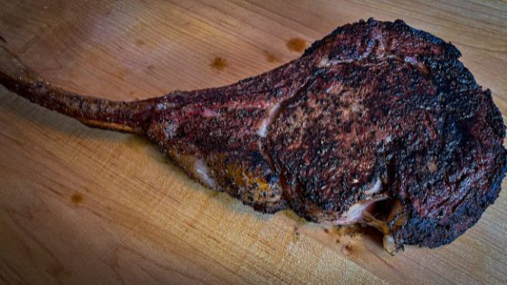

Reverse Seared Tomahawk Steak

Incredible melt in your mouth tender Tomahawk Ribeye Steak
This recipe is easy to follow and results in a wonderfully flavorful medium steak that is so good when your guest put your meat in the mouth, they are going to want to swallow.
Ingredients
- 1 Tomahawk Ribeye Steak
- Course Ground Salt
- Ground Pepper
- Garlic Powder
Instructions
- Preheat oven to 250ºF
- Place steak on a wire rack and generously salt both sides and allow to come to room temperature
- Once at room temperature add pepper and garlic powder to both sides of the steak
- Insert meat thermometer and place steak in oven until internal temp reaches 120ºF
- Lite a full chimney of charcoal in preperation for searing steak
- When internal temperature reaches 120ºF remove from oven and cover with foil to rest while you dump your chimney of charcoal and allow grill to get to searing temperature
- Sear for 90 seconds and rotate 90º for another 90 seconds before flipping to repeat on the opposite side
- Remove steak once internal temperature reaches 130ºF and allow to rest for 10-15 minutes before slicing
- Enjoy
Return to main page